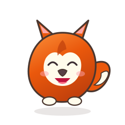
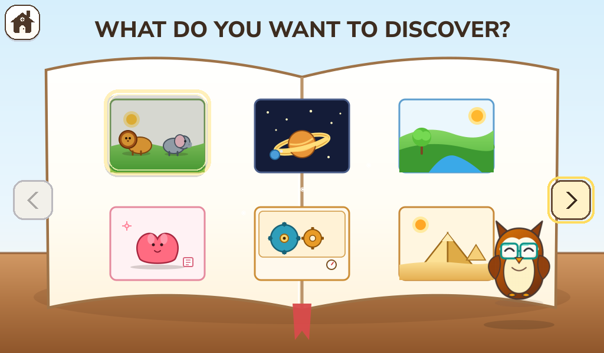
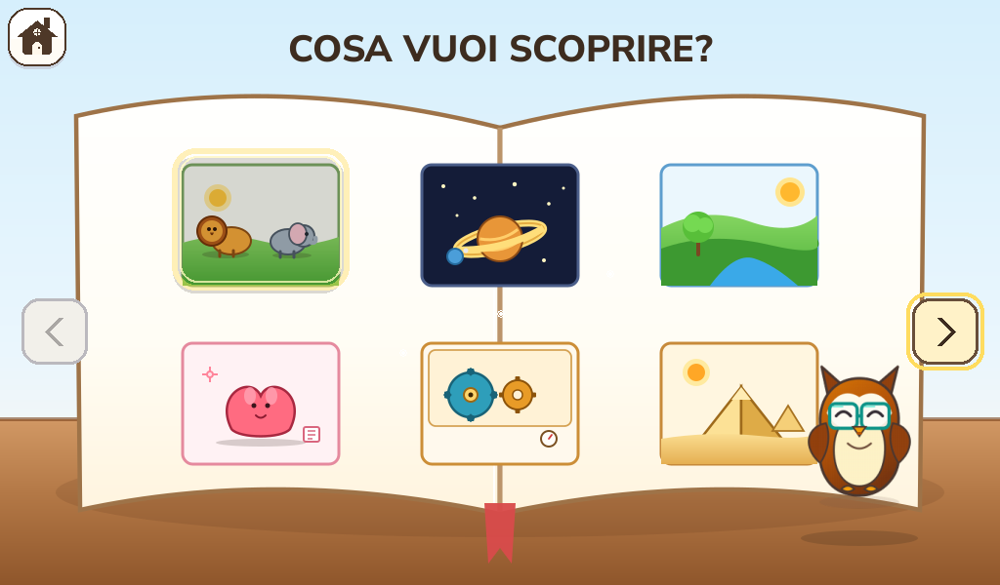

Spend on the child, not another machine.
Reusing a capable old computer can lower the cost of a dedicated creative place. Greia's small-memory reference helps keep the core lean.
A COMPLETE LINUX OS FOR CHILDREN
Install Greia and the machine boots into a creative, child-friendly world instead of a normal desktop. Children make and explore. Parents stay in control.
TRY GREIA TODAY · TECHNICAL PREVIEW
Download the installer, write it to a USB stick and install Greia on a netbook or PC. Step-by-step help for Windows, macOS and Linux is on the download page.
01 / WHAT GREIA IS
Greia is a Linux distribution, not a children's app sitting on top of somebody else's desktop. Installation gives the device a Greia boot, child profiles, Greia Shell and Activities. The usual Linux desktop, terminal, file manager and browser are not the child's route through the machine.
A continuous Greia arrival leads to a choice of child profile.
Large Collections lead to making, playing, learning and exploring.
Activities have their own worlds; Greia keeps the protected way back.
Linux is the foundation. Greia owns the child's visible experience and the shared rules for identity, storage, input, permissions, package trust and parent control.
Explore the four layers ↘02 / A LOOK INSIDE
These are current English-interface captures from the real-service development Simulator, not illustrations of an imagined product. Browse the Shell and a selection of Activities, then enlarge a frame to see its details.
THE CHILD SHELL
Simulator captures show the development source at the stated date. They do not certify a public installer or every physical device.
03 / MORE USE FROM MORE COMPUTERS
Greia is being built for all kinds of practical computers, from first-generation netbooks onward. Old machines matter because a useful child computer need not begin with a new purchase. Raspberry Pi 400 and 500 are equally important: add a display and hand your child the computer inside the keyboard.
ONE GREIA EXPERIENCE · MANY POSSIBLE MACHINES
MAKE GOOD HARDWARE USEFUL AGAIN
Greia aims to make older laptops and small PCs useful, legible and pleasant for children. The first-generation Acer Aspire One is our toughest low-resource reference, not the only computer we care about.
Hardware support is a goal verified per device and image; the current site does not promise that every PC is ready today.
Reusing a capable old computer can lower the cost of a dedicated creative place. Greia's small-memory reference helps keep the core lean.
With a Pi 400 or Pi 500, a parent can connect a screen, then give their child a compact computer built into the keyboard itself.
The Shell, Activities, parent rules and portable child data are designed to travel across old x86, ARM and other supported hardware.
04 / WHY THE SYSTEM CAN GROW
Greia is a complete operating environment with clear owners. The child sees the Shell and Activities. Underneath, Greia keeps the rules that make different machines and different Activity authors feel like one dependable place.
01 / THE CHILD'S WORLD
Each child explicitly chooses a Greia profile. The Shell presents Activities in understandable Collections, and Greia keeps a real Home control available above an Activity.
Activities share keyboard, pointer, touch and controller meanings. A child should not have to relearn basic controls every time they enter a new world.
Packages declare their needs. Greia checks them before installation, keeps saves in each child's profile and retains the protected route Home.
Writing and Painting are first-party creative starting points. Profile-scoped storage and portable logical backups are part of the platform contract.
05 / CONNECT FOR THE GROWN-UPS
Greia works without an Internet connection for core child use. A local network makes it more useful: parents can open Greia Parents on their own phone or computer to manage the child's machine. Network access does not turn the child experience into a general web browser.

ONE CHILD AT A TIME
A child picks their profile at boot. Writing, drawings, Activity saves, progress and language preferences belong to that profile.
The image is one real development client viewport, opens as a single original 1024×600 capture. It displays “This Greia”; the topic buttons explain other Parent capabilities.
Put Greia on your home or school network so a parent can manage it from another device. Core play and saves remain available offline.
Normal child use has no general browser, search bar, desktop or arbitrary web escape. Activity network access is denied by default and must be explicitly mediated.
Parent controls cover profiles, visibility, supported hardware settings and connected parent devices through Greia-owned services.
Parent pairing uses device-owned HTTPS on the local network; installed browser and certificate acceptance are still being completed. The site describes the intended family experience and the development client honestly.
06 / ACTIVITIES MADE FOR ONE CHILD
Greia's Activity SDK gives coding agents explicit rules and tools for making Activities. Today a contributor can give those tools to Claude or ChatGPT and ask for something shaped around a child. The planned family Creation Pack will let parents install the kit on their own computer, describe an idea and receive a tested package to approve for their child's Greia. That guided family route is still in development.
Start with an interest
Then choose the kind of play
Plant a seed, draw what grows and come back to notice the change.

.greiaactivity file. Greia checks it, and the parent chooses whether to install and show it to a child.The contributor SDK and bounded new-install service exist today. Installing the polished family Creation Pack on a parent's computer, and the ordinary-family package installation lifecycle, remain work in progress.
Read the Activity authoring skill ↗07 / BEFORE THEY CAN READ
For a young child, speech can carry a welcome, a hint or the sound of a new word. Greia designs for children who cannot yet read: clear pictures and controls do the first work, while short, repeatable voices help them understand and feel accompanied.

“Hi! I'm Lilli! I love making up stories, drawing colorful things, and finding a little magic everywhere. Got a silly idea? Come with me!”
Designed into the Activity. Authors identify the exact moments that need speech: a first demonstration, a hint, a phoneme, a celebration. Audio is not a patch for a confusing screen.
Generated while creating, not while playing. Greia's voice-production engine can make the localized recordings as part of an agent's authoring work. People review them, then the child computer plays small files with no live voice model.
08 / A WORLD IN MORE THAN ONE LANGUAGE
Language is a Greia profile and content concern, not a different product. Here is the same Encyclopedia home screen captured in English and Italian. Selectable language does not automatically mean every Activity and voice is fully translated or certified for release.


09 / OPEN SOURCE, OPEN POSSIBILITIES
Greia is being built as an open-source educational platform. Reused machines, low-cost hardware and independently created Activities could help families, schools and community programmes, including those in lower-income countries, offer creative computing without buying a fleet of new PCs or tying every child to an online service.
Teachers and schools could curate their own Activity collections and create lessons tailored to language, curriculum and community.
Old netbooks and compact computers can be practical dedicated child machines. This may matter especially where new devices and reliable connectivity are expensive.
The OS and Activity contracts aim to be open to families, educators, developers and agents. Independent distribution stays possible alongside a future curated catalogue.
Open-source is the direction; publication, licensing/provenance and installer release gates are being completed. Follow the code and help shape the system.
10 / FREE FOR EVERY CHILD
Greia costs nothing for parents and children, and it will stay that way: downloading, installing, updating and using it never requires a payment. Building it takes time, test computers, translations and recorded voices. If you or your organisation can help, it makes a real difference.
Every family gets exactly the same Greia, whether or not they give. A donation simply lets us do more of the work that reaches children:
Companies and foundations can fund a concrete piece of Greia: a new language, a family of computers, a series of Activities. We're glad to credit sponsors who want it.
Talk about sponsoring ↗Refurbishing and digital-inclusion programmes can turn donated machines into dedicated child computers. We can help with pilots, installation and your community's language.
Plan a collaboration ↗Classroom pilots, curated Activity collections for a curriculum, teacher feedback and studies on how young children use their first computer.
Start a school project ↗A game, story or lesson for your programme, museum or publication, built to Greia's child-first standards, with recorded voices in English, Italian, Spanish and French.
Commission an Activity ↗A Greia edition prepared for specific hardware, a school fleet or a programme: hardware support, a chosen set of Activities and your settings ready out of the box.
Design an edition ↗Greia's code is open source (MPL-2.0). Anyone can install, modify and sell it, including computers with Greia preinstalled, with no fee or royalty. Saying “Runs Greia OS” or “Powered by Greia OS” truthfully is free too.
Presenting a product as an official Greia device, or using “Greia Approved”, “Official Greia Partner” or the Greia logo as your brand, needs an agreement. It can include testing on your hardware, co-branding, custom Activities, integration and support.
11 / THE PRACTICAL QUESTIONS
Greia is a real operating-system project in development, not yet an ordinary-family release. Here are the distinctions a parent should be able to see immediately.
A whole child-focused Linux distribution. Installation gives the computer a Greia boot, profile picker, Shell and Activities. A conventional desktop is not presented during normal child use.
No for core play, saves and built-in Activities. A local network is useful for Greia Parents on a phone or another computer. Normal child use does not include a general web browser; an Activity's network permission is denied by default and must be mediated.
Greia targets a broad hardware range: early netbooks, other PCs and Raspberry Pi 400/500 among them. Support is verified per device and release image. Download pages will name the tested scope rather than imply that every machine is already certified.
Yes. Writing and Painting are mandatory first-party creative Activities for the first user-ready image, with profile-scoped autosave and child-sized controls. Their final release and hardware acceptance still need their named gates.
The Activity authoring skill is designed for coding agents as well as people. A parent can describe an idea, and an agent can read the public rules, create and validate an Activity, produce prerecorded voice and test it. The polished family self-service path is still being developed; package installation always remains parent-authorized.
The planned parent-facing package is a .greiaactivity file. The Activity library is ready to list individual packages as they are reviewed and published. There are no public packages to download from this work-in-progress site yet.
No. Voice generation happens during authoring. Short lines are reviewed and stored as audio, so the low-resource child computer only plays them back. Meaningful visual cues remain important as well.
A technical-preview installer for netbooks and PCs is on the Downloads page, with instructions for writing it to a USB stick and installing it. It is meant for people comfortable trying new software, not yet a family release. Greia is built for an open-source ecosystem; public-repository preparation is ongoing.
CONTACT THE PROJECT
Write to the Greia team. We read every message: families, teachers, contributors, partners and press are all welcome. Looking to sponsor or collaborate? See how to support Greia.